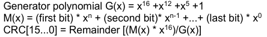
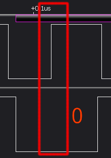

Preface
An SD card (Secure Digital Memory Card) is a storage medium based on NAND flash technology, designed as a replacement for MMC (Multimedia Card). It is commonly used in multimedia players, cameras, and phones, and later became widely used in IoT devices and automotive electronics as well. By physical size, SD cards can be divided into SD, miniSD, and microSD.

There are currently two SD card speed class markings in common use: the “standard” speed class marking and the UHS speed class marking. Different speed classes correspond to different bus modes. The SD Association has also introduced a newer speed class standard, Video Speed Class, which uses the UHS bus. SD card capacity also follows standards, ranging from SDSC to SDUC.


SD card parameters can often be seen on the label sticker or silkscreen.

The original name of microSD was TF (Trans-flash Card). SD slots are compatible with MMC cards, and you can also wire an eMMC to an SD slot via fly-wires.

This post is based on the SD Physical Layer Simplified Specification, Version 6, and focuses on the unlock mechanism.
SDIO (Secure Digital Input Output) is derived from modifications to the SD Physical Layer specification and is an extension of the SD standard. In addition to SDIO storage cards that support the SDIO specification, it also supports SDIO peripheral devices such as Wi‑Fi modules, GPS modules, CMOS sensor modules, etc.
I/O Information
Below is a pin comparison between MMC and SD cards.

Under different bus protocols and transfer modes, these pins serve different functions. This post mainly focuses on the SD-mode specification. In the Type column, the definitions are:
- S - Power Supply
- I - Input
- O - Output using Pull Push Drivers
- PP - I/O using Pull Push Drivers
| Pin # | Name | Type | Description |
|---|---|---|---|
| 1 | CD/DAT3 | I/O/PP | Card Detect/Data Line [Bit3] |
| 2 | CMD | I/O/PP | Command/Response |
| 3 | VSS1 | S | Supply voltage ground |
| 4 | VDD | S | Supply voltage |
| 5 | CLK | I | Clock |
| 6 | VSS2 | S | Supply voltage ground |
| 7 | DAT0 | I/O/PP | Data Line [Bit0] |
| 8 | DAT1 | I/O/PP | Data Line [Bit1] |
| 9 | DAT2 | I/O/PP | Data Line [Bit2] |
Below is the SD card we studied: an SDSC card (maximum 2GB). It is printed with “M2B9 2GB Made in Japan”; these markings don’t seem searchable online.

Now look at the SD controller chip, “56X31B002 AC00145R”, also not searchable. However, the memory chip below has a Micron logo. On the FBGA & Component Marking Decoder website you can query the FBGA code. It is an SLC NAND Flash in a VBGA100 package, but the official information is not very accurate—only a 16GB version is listed.

Registers
OCR, CID, CSD, and SCR carry card-specific information; RCA and DSR store the actual configuration parameters; SSR and CSR carry status information. Because the spec authors seem a bit obsessive, the registers are all three-letter abbreviations; if three letters can’t express the meaning precisely, they drop the “R”.
| Name | length(bit) | Description | Optional |
|---|---|---|---|
| CID | 128 | Card Identification Data, includes Manufacturer ID, OEM ID, Product Name, Product Revision, Manufacturing Date, and checksum | Required |
| RCA | 16 | Relative Card Address, used for addressing; default 0x0000; not available in SPI mode | Required |
| DSR | 16 | Driver Stage Register, used to improve bus performance | Optional |
| CSD | 128 | Card Special Data, complex; includes operating conditions such as error types, maximum data access time, speed, DSR availability, etc. | Required |
| SCR | 64 | SD Configuration Register, includes supported features and spec version | Required |
| OCR | 32 | Operation Condition Register, carries current power information | Required |
| SSR | 512 | SD Status Register, carries current SD card characteristics and application-specific status info such as bus width, security mode, card type, speed, etc. | Required |
| CSR | 32 | Card Status Register, carries the status when executing commands (reflected in responses), such as lock state and error info | Required |
Architecture
The card contains a power-on detection circuit connected to both the host interface and the storage-area interface. Each pin connects to the card controller, and the controller operates on the storage area via the storage interface.

SDIO
In the SDIO specification, two types of SDIO cards are defined: low-speed cards and high-speed cards. Three modes are defined for SDIO cards:
- SPI bus mode
- One-bit SD bus mode - command and data are separated
- Four-bit SD bus mode - supported by high-speed cards; commands occupy a dedicated channel while the other 4 channels transfer data; this is the default SD mode
SD Bus Protocol
SD bus communication mainly consists of CMD (Command Token, operation command) and DAT (data). CMD and DAT are transmitted in parallel on different channels. CMD and Response share the same channel: CMD comes from the host, Response comes from the SD card, and a Response appears only for specific CMDs.

SD specifies block-based read/write operations; the data block follows the CMD. Each data block ends with CRC bits. Termination of an operation is done by sending a terminate command.

The write process includes a busy signal.

CMD Format
The Command Token length is 48 bits. The start bit is 0. The transmission bit is 1, indicating data from the host. Content carries the command, address information, and parameters. It ends with a 7-bit CRC (Cyclic Redundancy Check), and the end bit is 0. Because of this property, the first byte of a Response is 0x40 smaller than the first byte of a CMD.

There are four response token scenarios. Depending on the scenario, different lengths are used: 48-bit (R1, R3, R6) and 136-bit (R2). The transmission bit is 0, indicating data from the SD card.

Data Packet Format
In normal mode, data is transmitted via DAT[0-3]. Like CMD, it has a start bit 0, an end bit 1, and CRC. The default bus width is 1-bit.

CRC7
SD cards use the CRC7/MMC algorithm for CMD checking. The formula is:

Convert the polynomial to binary G(x):
10001001
Append (divisor-1) bits (i.e., 7) to the data frame M(x), then perform modulo-2 division: divide the data frame by 10001001 to obtain the CRC.

CRC16
SD cards use CRC-16/CCITT-XMODEM for Data checking. In wide-bus mode, each line computes CRC independently. The formula is:

Convert the polynomial to binary G(x); the 16th bit exceeds the length and is ignored:
0001000000100001

Response Type
There are five types of SD card responses; SDIO supports additional response types R4 and R5. Except for R3, response packets end with CRC.
- R1 Normal response; may carry a busy signal (R1b)
- R2 CID/CSD response
- R3 OCR response
- R6 RCA response
- R7 Card interface condition response
Formats for different response types
The parameter field of R1 is 32 bits and corresponds to card status. Due to version iteration, the spec doesn’t explicitly call it CSR, and the CSR register was defined later. R2 directly returns CID or CSD data. R3 returns OCR data.


Function mode
There are two operating modes for SD cards; by default the card is inactive:
- card indentification mode
- data transfer mode
Under UHS-II and SD mode, the card identification mode differs.
Command
Commands are mainly of two types—broadcast and addressed. More specifically, there are four categories:
- broadcast commands (bc), no response
- broadcast commands with response (bcr) (Note: No open drain on SD card)
- addressed (point-to-point) commands (ac), no data transfer on DAT lines
- addressed (point-to-point) data transfer commands (adtc), data transfer on DAT lines
CMD5 and CMD52-54 are SDIO-specific.
Most Significant Bit (MSB) comes first; Least Significant Bit (LSB) comes last.

Classes are categorized as follows:
| Class # | Name |
|---|---|
| 0 | Basic Commands |
| 1 | Command and Queue Function Commands |
| 2 | Block Oriented Read Commands |
| 3 | Reversed |
| 4 | Block Oriented Write Commands |
| 5 | Erase Commands |
| 6 | Block Oriented Write Protection Commands |
| 7 | Lock Card |
| 8 | Application Specific Commands |
| 9 | I/O Mode Commands |
| 10 | Switch Function Commands |
| 11 | Function Extension Commands |
There are three “Class 7” commands related to card locking. CMD16 sets the block length and is used for setting the password. CMD42 performs lock/unlock. A locked card can respond to Class 0 commands.

For SDSC cards, SET_BLOCK_LEN can be used to specify the data block length. For SDHC and SDXC cards, the block length is fixed at 512 bytes.
Application-Specific Commands
Application-Specific Commands extend Commands. CMD55 is the condition to trigger ACMD; ACMD41 is CMD55 followed by CMD41.
ACMD41 is the initialization command and sets HCS (Host Capacity Support), determining SD card type, power control, and voltage levels. ACMD6 sets the bus width, choosing 1-bit or 4-bit data transfer. Only unlocked cards in transfer state can use ACMD6.
Status Information
SD card status information can be seen in R1-type responses, e.g., CMD13. SD cards have three kinds of status information:
- SD Status
- Card Status
- Task Status
Below are the type definitions for each bit:
E - Error bit S - Status bit R - Detected and set for the actual command response X - Detected and set during command execution. The host can obtain status info from command responses
And the clear conditions for status bits:
A - According to the card current status. B - Always related to the previous command. Cleared by sending specific CMDs C - Clear by read.
R1 responses carry card status information. The length is 32 bits and is stored in CSR. Below is the definition of each CSR bit (reserved bits omitted).
| Bits | Identifier | Type | Value | Description | Clear Condition |
|---|---|---|---|---|---|
| 31 | OUT_OF_RANGE | E R X | ‘0’= no error ‘1’= error |
The command’s argument was out of the allowed range for this card. | C |
| 30 | ADDRESS_ERROR | E R X | ‘0’= no error ‘1’= error |
A misaligned address which did not match the block length was used in the command. | C |
| 29 | BLOCK_LEN_ERROR | E R X | ‘0’= no error ‘1’= error |
The transferred block length is not allowed for this card, or the number of transferred bytes does not match the block length. | C |
| 28 | ERASE_SEQ_ERROR | E R | ‘0’= no error ‘1’= error |
An error in the sequence of erasecommands occurred. | C |
| 27 | ERASE_PARAM | E R X | ‘0’= no error ‘1’= error |
An invalid selection of write-blocksfor erase occurred. | C |
| 26 | WP_VIOLATION | E R X | ‘0’= no protected ‘1’= protected |
Set when the host attempts to writeto a protected block or to the temporary or permanent write protected card. | C |
| 25 | CARD_IS_LOCKED | S X | ‘0’= card unlocked ‘1’= card locked |
When set, signals that the card is locked by the host. | A |
| 24 | LOCK_UNLOCK_FAILED | E R X | ‘0’= no error ‘1’= error |
Set when a sequence or passworderror has been detected in lock/unlock card command. | C |
| 23 | COM_CRC_ERROR | E R | ‘0’= no error ‘1’= error |
The CRC check of the previous command failed. | B |
| 22 | ILLEGAL_COMMAND | E R | ‘0’= no error ‘1’= error |
Command not legal for the cardstate | B |
| 21 | CARD_ECC_FAILED | E R X | ‘0’= no error ‘1’= error |
Card internal ECC was applied butfailed to correct the data. | C |
| 20 | CC_ERROR | E R X | ‘0’= no error ‘1’= error |
Internal card controller error. | C |
| 19 | ERROR | E R X | ‘0’= no error ‘1’= error |
A general or an unknown error occurred during the operation. | C |
| 16 | CSD_OVERWRITE | E R X | ‘0’= no error ‘1’= error |
Can be either one of the following errors: - The read only section of the CSD does not match the card content. - An attempt to reverse the copy (set as original) or permanent WP (unprotected) bits was made. |
C |
| 15 | WP_ERASE_SKIP | E R X | ‘0’= no protected ‘1’= protected |
Set when only partial address space was erased due to existing write protected blocks or the temporary or permanent write protected card was erased. | C |
| 14 | CARD_ECC_DISABLED | S X | ‘0’= enabled ‘1’= disabled |
The command has been executed without using the internal ECC. | A |
| 13 | ERASE_RESET | S R | ‘0’= cleared ‘1’= set |
An erase sequence was cleared before executing because an out of erase sequence command was received. | C |
| 12:9 | CURRENT_STATE | S X | 0 = idle 1 = ready 2 = ident 3 = stby 4 = tran 5 = data 6 = rcv 7 = prg 8 = dis 9-14 = reserved 15 = reserved for I/O mode |
The state of the card when receiving the command. If the command execution causes a state change, it will be visible to the host in the response to the next command. The four bits are interpreted as a binary coded number between 0 and 15. |
B |
| 8 | READY_FOR_DATA | S X | ‘0’= not ready ‘1’= ready |
Corresponds to buffer empty signaling on the bus. | A |
| 6 | FX_EVENT | S X | ‘0’= No event ‘1’= Event invoked |
Extension Functions may set this bit to get host to deal with events. | A |
| 5 | APP_CMD | S R | ‘0’= enabled ‘1’= disabled |
The card will expect ACMD, or an indication that the command has been interpreted as ACMD. | C |
| 3 | AKE_SEQ_ERROR(SD Memory Card app. spec.) | E R | ‘0’= no error ‘1’= error |
Error in the sequence of the authentication process. | C |
12:9 is 4 bits long. Converting to decimal corresponds to the card’s operating stage:

SD Protocol Sniff
Length matching is a PCB design term, commonly used for high-speed I/O such as DDR. When using fly-wires, try to keep equal lengths and control the distance between the clock line and other signal lines—this is also an SD card vendor requirement for PCB design.

In practice, SD “high-speed” mode is only 20MHz, so whether you use length-matched routing doesn’t have much impact on data. The most critical factor is the sampling rate of the logic analyzer. At the beginning, a 100MHz sampling-rate logic analyzer often produced garbage; after switching to an LA5016 at 500MHz, it worked normally.

Choose the sampling rate and time, and also select the voltage level. Select SDIO and trigger on the clock rising edge. This yields accurate logic levels. As shown below, the data corresponding to the rising edge is 0.

SD Unlock
The unlock session is only effective within a single power cycle; on the next power-up, the SD card automatically returns to the locked state. The unlock flow first uses CMD7 to select the card. If FEP is set, you need to unlock COP. Then use CMD16 to set the required block length: 8-bit unlock operation + 8-bit password length + the actual password length. Finally, send CMD42 to unlock.

CMD 42
CMD42 is used to unlock the device, with two versions: V1.0 and V2.0. There are also two unlocking methods: force erase password (Force Erase Password, FEP), and password-based unlock. Only SD cards with the COP (Card Ownership Protection) feature have a non-volatile FEP register. COP is newly added in SD spec 6.0, and SD cards with COP are rare on the market.
From the CMD format, 01 indicates a CMD request, 101010 represents 42, so the first byte of CMD42 should be 01101010, i.e. 6A.
The first 4 bits of CMD42’s argument should be 0. The corresponding CSR status bit-25 should change from 1 to 0, and bit-24 should be 0.

By decoding the communication between the host and the SD card with a logic analyzer, I obtained the following frame. The Command Index, Arguments, and CRC7 all match the definitions above.
6A 00 00 00 00 51
The last byte 51 can be validated via CRC7.
The target device studied in this post is relatively old and does not support COP. In the lock/unlock bit, 0 indicates unlock and 1 indicates lock. Since we use CMD42, the operation parameter is 00000000, i.e. CMD42[00h].
For the Data portion of CMD42: the first byte describes the operation. The first three bits are reserved and are typically set to 0. The fourth bit indicates the COP feature. During unlock, the remaining four bits should all be 0. The second byte is the password length field, 8 bits wide, in bytes. Therefore the maximum password length is 128 bytes. Here the password length is 16 bytes. Starting from the third byte is the password data, and finally a 16-bit CRC is appended.

The address in CMD7 is random:
47 4B 47 00 00 6F
[47:41] 01000111 start bit + Command index
[40:32] 01001011 RCA 4B
[31:24] 01000111 RCA 47
[23:16] 00000000 stuff bits
[15:8] 00000000
[7:0] 01101111 CRC7 + end bit
07 02 00 07 00 79
CMD16 is as follows. The second-to-last line is the SET_BLOCKLEN argument, which sets the block length and must be an even length. The response type is R1. 0b00010010 is 18 in decimal, i.e. 2 bytes of parameters plus a 16-byte password.
50 00 00 00 12 2F
[47:41] 01010000 start bit + Command index
[40:32] 00000000
[31:24] 00000000
[23:16] 00000000
[15:8] 00010010 SET_BLOCKLEN
[7:0] 00101111 CRC7 + end bit
CMD16 response:
10 02 00 09 00 07
[47:41] 00010000 start bit + Command index
[40:32] 00000010 Card Status
[31:24] 00000000 Card Status
[23:16] 00001001 Card Status
[15:8] 00000000 Card Status
[7:0] 00000111 CRC7 + end bit
The first byte of the CMD42 response is 00101010, i.e. 2A. The response type is R1.
I captured the CMD42 response using a logic analyzer.
Convert the Parameter field to binary. According to the CSR definition, the status below indicates: not unlocked, ready, tran mode.
2a 02 00 09 00 6f
[47:41] 00010000 start bit + Command index
[40:32] 00000010 Card Status Locked
[31:24] 00000000 Card Status
[23:16] 00001001 Card Status
[15:8] 00000000 Card Status
[7:0] 00000111 CRC7 + end bit
After CMD42 Data is sent, send CMD13. According to CSR, the status below indicates: unlocked, ready, tran mode, APP_CMD disabled.
0D 00 00 09 00 07
[47:41] 00010000 start bit + Command index
[40:32] 00000000 Card Status Unlocked
[31:24] 00000000 Card Status
[23:16] 00001001 Card Status
[15:8] 00000000 Card Status
[7:0] 01101111 CRC7 + end bit
Analyze Data
In KingstVIS, locate the Data0 channel. Align to the rising edge after CMD42, select the interval, and export the clock channel and Data0 channel as TXT.

The exported data is actually still CSV. In KingstVIS, exporting as CSV results in reversed order, so TXT format was chosen. The character encoding is ANSI; it will appear garbled on Linux, so remove the Title line.

With the script below, you can print the Data0 data into readable output.
#!/usr/bin/env python3
# -*- coding: utf-8 -*-
import csv
import sys
import getopt
import binascii
def parse_csv(csv_file):
try:
with open(csv_file, 'r') as f:
reader = csv.reader(f)
last_ch0_v = 0
bits = []
for line in reader:
current_ch0_v = int(line[1])
if (current_ch0_v ^ last_ch0_v) and last_ch0_v == 0:
bits.append(str(int(line[2])))
last_ch0_v = current_ch0_v
return bits
except Exception as e:
print(e)
def crc16_calc(data):
crc = 0x0000
poly = 0x1021
for b in data:
cur_byte = 0xFF & b
for i in range(0, 8):
bit = ((cur_byte >> (7-i) & 1) == 1)
c15 = ((crc >> 15 & 1) == 1)
crc <<= 1
if (c15 ^ bit):
crc ^= poly
return crc & 0xFFFF
if __name__ == '__main__':
if len(sys.argv) < 3:
usage()
try:
options, args = getopt.getopt(sys.argv[1:], "f:o")
csv_file = ''
output_file = ''
for opt, arg in options:
if opt == '-f':
csv_file = arg
elif opt == '-o':
output_file = arg
bits = parse_csv(csv_file)
remainder = len(bits) % 8
bits = bits[0:len(bits) - remainder]
keys_list = []
crc_data = []
keys_len = 0
# 去掉Data的第一位标志位
if bits[0] == '0':
bits = bits[1:]
for i in range(0, len(bits), 8):
byte = bits[i] + bits[i+1] + bits[i+2] + bits[i+3] + \
bits[i+4] + bits[i+5] + bits[i+6] + bits[i+7]
n = i/8
if n == 0 :
if int(byte, 2) == 0:
keys_list.append(int(byte, 2))
else:
print("CMD42 data block parameters error.")
exit()
elif n == 1:
keys_len = int(byte, 2)
keys_list.append(keys_len)
print("Keys length: " + str(keys_len) + "-bytes")
elif n > 1 and n <= (keys_len + 1):
keys_list.append(int(byte, 2))
elif (keys_len + 2) <= n <= (keys_len + 3):
crc_data.append(int(byte, 2))
else:
if (crc_data[0]*16*16 + crc_data[1]) == crc16_calc(keys_list):
x = bytearray(keys_list[2:keys_len+2])
print("Key:", str(binascii.b2a_hex(x))[2:(keys_len+1)*2])
print("CRC:", hex(crc16_calc(keys_list)))
print("\nAnalyse compeleted!")
else:
print("CRC error!")
exit()
else:
print("Data Error")
except Exception as e:
print(e)
usage()
def usage():
print("Usage:python kinstvis_sdio_parser.py -f test.csv")
Remove the first start bit, parse the CMD42 Data structure, and then verify CRC; the CRC check succeeds.

The password is:
5ffca19ffcdb5899a82c4e265f99c76b
MMC Utils
The next step is to write an SD unlock tool. Micron’s official documentation provides a demo for adding lock/unlock functionality; by modifying mmc-utils you can implement unlocking.
git clone git://git.kernel.org/pub/scm/linux/kernel/git/cjb/mmc-utils.git
mmc-utils/mmc.h
#define MMC_SET_BLOCKLEN 16 /* ac [31:0] block len R1 */
#define MMC_LOCK_UNLOCK 42 /* adtc R1b */
#define MMC_CMD42_UNLOCK 0x0 /* UNLOCK */
#define MMC_CMD42_SET_PWD 0x1 /* SET_PWD */
#define MMC_CMD42_CLR_PWD 0x2 /* CLR_PWD */
#define MMC_CMD42_LOCK 0x4 /* LOCK */
#define MMC_CMD42_SET_LOCK 0x5 /* SET_PWD & LOCK */
#define MMC_CMD42_ERASE 0x8 /* ERASE */
#define MAX_PWD_LENGTH 32 /* max PWDS_LEN: old+new */
#define MMC_BLOCK_SIZE 512 /* data blk size for cmd42 */
#define MMC_R1_ERROR (1 << 19) /* R1 bit19 */
#define MMC_R1_LOCK_ULOCK_FAIL (1 << 24) /* R1 bit24 */
mmc-utils/mmc.c
{do_lock_unlock, -3,
"cmd42", "<password> <s|c|l|u|e> <device>\n"
"s\tset password\n"
"c\tclear password\n"
"l\tlock\n"
"sl\tset password and lock\n"
"u\tunlock\n"
"e\tforce erase\n",
NULL},
mmc-utils/mmc_cmds.h
//lock/unlock feature implementation
int do_lock_unlock(int nargs, char **argv)
{
int fd, ret = 0;
char *device;
__u8 data_block[MMC_BLOCK_SIZE] = {0};
__u8 data_block_onebyte[1] = {0};
int block_size = 0;
struct mmc_ioc_cmd idata;
int cmd42_para; //parameter of cmd42
char pwd[MAX_PWD_LENGTH + 1]; //password
int pwd_len; //password length
__u32 r1_response; //R1 response token
if (nargs != 4)
{
fprintf(stderr, "Usage: mmc cmd42 <password> <s|c|l|u|e> <device> \n");
exit(1);
}
strcpy(pwd, argv[1]);
pwd_len = strlen(pwd);
if (!strcmp("s", argv[2]))
{
cmd42_para = MMC_CMD42_SET_PWD;
printf("Set password: password=%s ...\n", pwd);
}
else if (!strcmp("c", argv[2]))
{
cmd42_para = MMC_CMD42_CLR_PWD;
printf("Clear password: password=%s ...\n", pwd);
}
else if (!strcmp("l", argv[2]))
{
cmd42_para = MMC_CMD42_LOCK;
printf("Lock the card: password=%s ...\n", pwd);
}
else if (!strcmp("sl", argv[2]))
{
cmd42_para = MMC_CMD42_SET_LOCK;
printf("Set password and lock the card: password - %s ...\n", pwd);
}
else if (!strcmp("u", argv[2]))
{
cmd42_para = MMC_CMD42_UNLOCK;
printf("Unlock the card: password=%s ...\n", pwd);
}
else if (!strcmp("e", argv[2]))
{
cmd42_para = MMC_CMD42_ERASE;
printf("Force erase ... (Warning: all card data will be erased together with PWD!)\n");
}
else
{
printf("Invalid parameter:\n"
"s\tset password\n"
"c\tclear password\n"
"l\tlock\n"
"sl\tset password and lock\n"
"u\tunlock\n"
"e\tforce erase\n");
exit(1);
}
device = argv[nargs - 1];
fd = open(device, O_RDWR);
if (fd < 0)
{
perror("open");
exit(1);
}
if (cmd42_para == MMC_CMD42_ERASE)
block_size = 2; //set blk size to 2-byte for Force Erase @DDR50 compability
else block_size = MMC_BLOCK_SIZE;
ret = set_block_len(fd, block_size); //set data block size prior to cmd42
printf("Set to data block length = %d byte(s).\n", block_size);
if (cmd42_para == MMC_CMD42_ERASE)
{
data_block_onebyte[0] = cmd42_para;
}
else
{
data_block[0] = cmd42_para;
data_block[1] = pwd_len;
memcpy((char *)(data_block + 2), pwd, pwd_len);
}
memset(&idata, 0, sizeof(idata));
idata.write_flag = 1;
idata.opcode = MMC_LOCK_UNLOCK;
idata.arg = 0; //set all 0 for cmd42 arg
idata.flags = MMC_RSP_R1 | MMC_CMD_AC | MMC_CMD_ADTC;
idata.blksz = block_size;
idata.blocks = 1;
if (cmd42_para == MMC_CMD42_ERASE)
mmc_ioc_cmd_set_data(idata, data_block_onebyte);
else
mmc_ioc_cmd_set_data(idata, data_block);
ret = ioctl(fd, MMC_IOC_CMD, &idata); //Issue CMD42
r1_response = idata.response[0];
printf("cmd42 response: 0x%08x\n", r1_response);
if (r1_response & MMC_R1_ERROR)
{ //check CMD42 error
printf("cmd42 error! Error code: 0x%08x\n", r1_response & MMC_R1_ERROR);
ret = -1;
}
if (r1_response & MMC_R1_LOCK_ULOCK_FAIL)
{
//check lock/unlock error
printf("Card lock/unlock fail! Error code: 0x%08x\n", r1_response & MMC_R1_LOCK_ULOCK_FAIL);
ret = -1;
}
close(fd);
return ret;
}
//change data block length
int set_block_len(int fd, int blk_len)
{
int ret = 0;
struct mmc_ioc_cmd idata;
memset(&idata, 0, sizeof(idata));
idata.opcode = MMC_SET_BLOCKLEN;
idata.arg = blk_len;
idata.flags = MMC_RSP_R1 | MMC_CMD_AC;
ret = ioctl(fd, MMC_IOC_CMD, &idata);
return ret;
}
In practice this is controlled via ioctl. After compiling, I could lock the card, but I could never successfully unlock it again—so I had to try another approach.
https://github.com/torvalds/linux/blob/master/include/uapi/linux/mmc/ioctl.h
sudo ./mmc scr read /sys/bus/mmc/devices/mmc0:aaaa/
type: 'SD'
version: SD 3.0x
bus widths: 4bit, 1bit,
sudo ./mmc cmd42 123456 s /sys/bus/mmc/devices/mmc0:aaaa/
Set password: password=123456 ...
Modify the kernel module
Since third-party tools couldn’t achieve it, I had to modify the kernel module. My OS was Arch Linux; the MMC driver is a kernel module, so I didn’t need to rebuild the whole kernel (unlike Ubuntu where it is often built-in).
The kernel module directories on Arch Linux are as follows. My laptop is an HP 840G3. The SD card uses the PCI bus, and the following drivers are involved:
/lib/modules/$(uname -r)/kernel/drivers/mmc/core/mmc_core.ko.xz
/lib/modules/$(uname -r)/kernel/drivers/mmc/core/mmc_block.ko.xz
/lib/modules/$(uname -r)/kernel/drivers/mmc/host/rtsx_pci_sdmmc.ko.xz
/lib/modules/$(uname -r)/kernel/drivers/misc/cardreader/rtsx_pci.ko.xz
If you re-download the official source and build the kernel module, you may encounter strange errors. First is the vermagic matching issue: if the kernel version and CPU features don’t match, the module cannot be loaded. Because Linux added a module signing mechanism after 3.7, you can use modinfo to inspect the system’s built-in modules; missing signatures can also prevent loading.
$ modinfo mmc_core
filename: /lib/modules/4.18.10-arch1-1-ARCH/kernel/drivers/mmc/core/mmc_core.ko.xz
license: GPL
srcversion: 72D2DBEB18AB4B898BE5331
depends:
retpoline: Y
intree: Y
name: mmc_core
vermagic: 4.18.10-arch1-1-ARCH SMP preempt mod_unload modversions
sig_id: PKCS#7
signer:
sig_key:
sig_hashalgo: md4
signature: 30:82:02:A5:06:09:2A:86:48:86:F7:0D:01:07:02:A0:82:02:96:30
以下省略
parm: use_spi_crc:bool
We can build in /usr/lib/modules/$(uname -r)/build/ without extra configuration. Just copy the MMC core code into the target directory, then make, and reload the MMC kernel modules.
cp ./core/* /usr/lib/modules/$(uname -r)/build/drivers/mmc/core/
make modules SUBDIRS=drivers/mmc/core
Building modules, stage 2.
MODPOST 7 modules
rmmod rtsx_pci_sdmmc && rmmod mmc_core
insmod /usr/lib/modules/$(uname -r)/build/drivers/mmc/core/mmc_core.ko
insmod /lib/modules/$(uname -r)/kernel/drivers/mmc/host/rtsx_pci_sdmmc.ko.xz
Add Unlock Function
Add the unlock_mmc declaration in mmc_ops.h:
int unlock_mmc(struct mmc_card *card, u8* key_buf,int key_len);
Then implement it: first set the block length, then send the CMD42 ADTC command.
int unlock_mmc(struct mmc_card *card, u8* key_buf,int key_len)
{
int err;
int block_size = key_len + 2;
struct mmc_request mrq;
struct mmc_command cmd_sbl;
struct mmc_command cmd;
struct mmc_data data;
struct scatterlist sg;
u8 *data_buf = NULL;
/*------------CMD 16----------------*/
// 1 byteflag + 1 byte password length + 16 bytes password
memset(&cmd_sbl, 0, sizeof(struct mmc_command));
cmd_sbl.opcode = MMC_SET_BLOCKLEN;
cmd_sbl.arg = block_size;
cmd_sbl.flags = MMC_RSP_R1 | MMC_CMD_AC;
err = mmc_wait_for_cmd(card->host, &cmd_sbl, MMC_CMD_RETRIES);
if (err)
{
printk("%s failed block_size=%d \n",__func__,block_size);
goto out;
}
/*-----------CMD 42-----------------*/
// CMD
memset(&cmd, 0, sizeof(struct mmc_command));
cmd.opcode = MMC_LOCK_UNLOCK; // CMD 42
cmd.arg = 0; // set all 0 for cmd42 arg
cmd.flags = MMC_RSP_R1 | MMC_CMD_ADTC;
// Data
memset(&data, 0, sizeof(struct mmc_data));
data.timeout_ns = (2*1000*1000*1000);
data.blksz = block_size;
data.blocks = 1;
data.flags = MMC_DATA_WRITE;
data.sg = &sg;
data.sg_len = 1;
mmc_set_data_timeout(&data, card);
memset(&mrq, 0, sizeof(struct mmc_request));
mrq.cmd = &cmd;
mrq.data = &data;
// Set Data for DMA
data_buf = kzalloc(block_size, GFP_KERNEL);
if (!data_buf)
{
printk("%s kzalloc failed\n",__func__);
return -ENOMEM;
}
memset(data_buf, 0, block_size);
data_buf[0] = 0;
data_buf[1] = key_len;
memcpy(data_buf + 2, key_buf, key_len);
sg_init_one(&sg, data_buf, block_size);
// request
mmc_wait_for_req(card->host, &mrq);
err = cmd.error;
if (err)
printk("%s: unlock cmd error %d\n", __func__, cmd.error);
else
err = data.error;
if(err)
goto out;
printk("[SDLOCK] %s MMC_LOCK_UNLOCK \r\n",__func__);
out:
kfree(data_buf);
return err;
}
Before mmc_sd_setup_card in sd.c, add the unlock logic.
// 检查是否上锁
u32 status = 0;
err = mmc_send_status(card, &status);
if (err)
goto free_card;
if (status & R1_CARD_IS_LOCKED)
{
mmc_card_set_encrypted(card);
mmc_card_set_locked(card);
}
//方便调试
bool auto_unlock = true;
char unlock_pwd[16] = {0x5f,0xfc,0xa1,0x9f,0xfc,0xdb,0x58,0x99,0xa8,0x2c,0x4e,0x26,0x5f,0x99,0xc7,0x6b};
if (status & R1_CARD_IS_LOCKED) {
if(auto_unlock)
{
//unlock sd card
err = unlock_mmc(card, unlock_pwd, 16);
if(err)
{
printk("[SDLOCK] %s unlock failed \n",__func__);
}
else
{
printk("[SDLOCK] %s unlock success \n",__func__);
if(!mmc_card_locked(card))
{
auto_unlock = false;
printk("[SDLOCK] %s unlock success and sdcard status is unlocked.\n",__func__);
}
else
{
printk("[SDLOCK] %s unlock success but sdcard status is locked, abnormal status.\n",__func__);
}
}
//Check if card is locked
err = mmc_send_status(card, &status);
if (err)
{
printk("[SDLOCK] %s resume sd card exception /n",__func__);
goto free_card;
}
}
if (status & R1_CARD_IS_LOCKED)
{
printk(KERN_WARNING "[SDLOCK] sdcard is locked\n");
goto done;
}
else
{
printk(KERN_WARNING "[SDLOCK] sdcard resume to unlocked\n");
}
}
else
{
printk(KERN_WARNING "[SDLOCK] sdcard is unlocked\n");
}
Add macro definitions in card.h:
#define mmc_card_mmc(c) ((c)->type == MMC_TYPE_MMC)
#define mmc_card_sd(c) ((c)->type == MMC_TYPE_SD)
#define mmc_card_sdio(c) ((c)->type == MMC_TYPE_SDIO)
#define mmc_card_locked(c) ((c)->state & MMC_STATE_LOCKED)
#define mmc_card_encrypt(c) ((c)->state & MMC_STATE_ENCRYPT)
#define MMC_STATE_PRESENT (1<<0) /* present in sysfs */
#define MMC_STATE_READONLY (1<<1) /* card is read-only */
#define MMC_STATE_BLOCKADDR (1<<2) /* card uses block-addressing */
#define MMC_CARD_SDXC (1<<3) /* card is SDXC */
#define MMC_CARD_REMOVED (1<<4) /* card has been removed */
#define MMC_STATE_DOING_BKOPS (1<<5) /* card is doing BKOPS */
#define MMC_STATE_LOCKED (1<<12) /* card is currently locked */
#define MMC_STATE_ENCRYPT (1<<13) /* card is currently encrypt */
#define MMC_STATE_ULTRAHIGHSPEED (1<<14) /* card is in ultra high speed mode */
#define MMC_STATE_SUSPENDED (1<<6) /* card is suspended */
#define MMC_STATE_CMDQ (1<<7) /* card is in cmd queue mode */
#define MMC_LOCK_MODE_ERASE (1<<3)
#define MMC_LOCK_MODE_LOCK (1<<2)
#define MMC_LOCK_MODE_CLR_PWD (1<<1)
#define MMC_LOCK_MODE_SET_PWD (1<<0)
#define MMC_LOCK_MODE_UNLOCK 0
Add instrumentation in mmc_wait_for_req_done in core.c, then check logs via dmesg:
printk("[mmc] CMD %d err number: %d", mrq->cmd->opcode, mrq->cmd->error);
UHS-I
UHS-I (Ultra High Speed Phase I) is a bus interface for high-speed data transfer on SDHC and SDXC cards. It supports LVS and has seven operating modes:
- DS - Default Speed up to 25MHz 3.3V signaling
- HS - High Speed up to 50MHz 3.3V signaling
- SDR12 - SDR up to 25MHz 1.8V signaling
- SDR25 - SDR up to 50MHz 1.8V signaling
- SDR50 - SDR up to 100MHz 1.8V signaling
- SDR104 - SDR up to 208MHz 1.8V signaling
- DDR - DDR up to 50MHz 1.8V signaling
First, use CMD0 to select the bus mode: SPI mode or SD mode. The 1.8V signaling mode can only enter SD mode.

You can see the unlock did not succeed; CMD42 returned an error -22.
$ dmesg -l 0,1,2,3,4,5,6,7
[62696.072102] [mmc] CMD 52 err number: -110
[62696.175620] [mmc] CMD 52 err number: -110
[62696.177592] [mmc] CMD 0 err number: 0
[62696.181590] [mmc] CMD 8 err number: 0
[62696.282033] [mmc] CMD 5 err number: -110
[62696.385534] [mmc] CMD 5 err number: -110
[62696.492060] [mmc] CMD 5 err number: -110
[62696.595641] [mmc] CMD 5 err number: -110
[62696.596514] [mmc] CMD 55 err number: 0
[62696.597226] [mmc] CMD 41 err number: 0
[62696.626822] [mmc] CMD 0 err number: 0
[62696.630372] [mmc] CMD 8 err number: 0
[62696.631051] [mmc] CMD 55 err number: 0
[62696.631758] [mmc] CMD 41 err number: 0
[62696.642862] [mmc] CMD 55 err number: 0
[62696.643590] [mmc] CMD 41 err number: 0
[62696.656036] [mmc] CMD 55 err number: 0
[62696.656752] [mmc] CMD 41 err number: 0
[62696.669827] [mmc] CMD 55 err number: 0
[62696.670711] [mmc] CMD 41 err number: 0
[62696.683086] [mmc] CMD 55 err number: 0
[62696.683976] [mmc] CMD 41 err number: 0
[62696.685084] [mmc] CMD 2 err number: 0
[62696.685781] [mmc] CMD 3 err number: 0
[62696.686493] [mmc] CMD 13 err number: 0
[62696.687827] [mmc] CMD 9 err number: 0
[62696.688551] [mmc] CMD 7 err number: 0
[62696.689227] [mmc] CMD 16 err number: 0
[62696.690033] [mmc] CMD 42 err number: -22
[62696.690041] unlock_mmc: unlock cmd error -22
[62696.690045] [SDLOCK] mmc_sd_init_card unlock failed
[62696.690749] [mmc] CMD 13 err number: 0
[62696.690755] [SDLOCK] sdcard is locked
[62696.690773] mmc0: new SD card at address f317
[62696.691709] mmcblk0: mmc0:f317 MF02B 1.88 GiB
Linux error number -22 is EINVAL. Eventually I traced it to drivers/mmc/host/sdhci.c:
filename: drivers/mmc/core/core.c
functions:
mmc_wait_for_req -> __mmc_start_request -> host->ops->request
filename: drivers/mmc/host/rtsx_pci_sdmmc.c
functions:
sdmmc_request -> schedule_work -> sd_request -> sd_send_cmd_get_rsp -> sd_normal_rw -> sd_write_data -> rtsx_pci_write_ppbuf -> rtsx_pci_send_cmd
filename: drivers/misc/cardreader/rtsx_pcr.c
rtsx_pci_write_ppbuf
rtsx_pci_add_cmd
rtsx_pci_send_cmd
Because this is a laptop, the relevant commands are in the Realtek SD card reader driver; on phones it is drivers/mfd/rtsx_pcr.c.
int rtsx_pci_send_cmd(struct rtsx_pcr *pcr, int timeout)
{
...
if (pcr->trans_result == TRANS_RESULT_FAIL)
err = -EINVAL;
...
}
cp ./drivers/misc/cardreader/* /usr/lib/modules/$(uname -r)/build/drivers/misc/cardreader/
make modules SUBDIRS=drivers/misc/cardreader
By printing the parameters of rtsx_pci_add_cmd, I confirmed the key passed in was correct.
sd_cmd_set_sd_cmd
[75754.016095] [rtsx] cmd_type:1, reg_addr:fda9, ptr:0x50, val:2108292944 SD_CMD0 16
[75754.016100] [rtsx] cmd_type:1, reg_addr:fdaa, ptr:0x0, val:2108358400 SD_CMD1
[75754.016104] [rtsx] cmd_type:1, reg_addr:fdab, ptr:0x0, val:2108423936 SD_CMD2
[75754.016111] [rtsx] cmd_type:1, reg_addr:fdac, ptr:0x0, val:2108489472 SD_CMD3
[75754.016115] [rtsx] cmd_type:1, reg_addr:fdad, ptr:0x12, val:2108555026 SD_CMD4 0x12
sd_send_cmd_get_rsp
[75754.016119] [rtsx] cmd_type:1, reg_addr:fda1, ptr:0x1, val:2107768577 WRITE_REG_CMD SD_CFG2
[75754.016122] [rtsx] cmd_type:1, reg_addr:fd5b, ptr:0x1, val:2103116033 CARD_DATA_SOURCE
[75754.016126] [rtsx] cmd_type:1, reg_addr:fdb3, ptr:0x88, val:2108948360 WRITE_REG_CMD SD_TRANSFER
[75754.016130] [rtsx] cmd_type:2, reg_addr:fdb3, ptr:0x60, val:-1112317856 CHECK_REG_CMD SD_TRANSFER
[75754.016134] [rtsx] cmd_type:0, reg_addr:fda9, ptr:0x0, val:1034485760 sd_cmd_set_sd_cmd 0
[75754.016138] [rtsx] cmd_type:0, reg_addr:fdaa, ptr:0x0, val:1034551296 SD_CMD1
[75754.016142] [rtsx] cmd_type:0, reg_addr:fdab, ptr:0x0, val:1034616832 SD_CMD1
[75754.016146] [rtsx] cmd_type:0, reg_addr:fdac, ptr:0x0, val:1034682368 SD_CMD2
[75754.016150] [rtsx] cmd_type:0, reg_addr:fdad, ptr:0x0, val:1034747904 SD_CMD3
[75754.016153] [rtsx] cmd_type:0, reg_addr:fda3, ptr:0x0, val:1034092544 SD_STAT1
sd_cmd_set_sd_cmd
[75754.016787] [SDLOCK] unlock_mmc MMC_SET_BLOCKLEN 18
[75754.016820] [rtsx] cmd_type:1, reg_addr:fda9, ptr:0x6a, val:2108292970 SD_CMD0 42
[75754.016823] [rtsx] cmd_type:1, reg_addr:fdaa, ptr:0x0, val:2108358400 SD_CMD1
[75754.016826] [rtsx] cmd_type:1, reg_addr:fdab, ptr:0x0, val:2108423936 SD_CMD2
[75754.016829] [rtsx] cmd_type:1, reg_addr:fdac, ptr:0x0, val:2108489472 SD_CMD3
[75754.016831] [rtsx] cmd_type:1, reg_addr:fdad, ptr:0x0, val:2108555008 SD_CMD4
[75754.016834] [rtsx] cmd_type:1, reg_addr:fda1, ptr:0x1, val:2107768577 WRITE_REG_CMD SD_CFG2
[75754.016837] [rtsx] cmd_type:1, reg_addr:fd5b, ptr:0x1, val:2103116033 CARD_DATA_SOURCE
[75754.016839] [rtsx] cmd_type:1, reg_addr:fdb3, ptr:0x88, val:2108948360 WRITE_REG_CMD SD_TRANSFER
[75754.016842] [rtsx] cmd_type:2, reg_addr:fdb3, ptr:0x60, val:-1112317856 CHECK_REG_CMD SD_TRANSFER
[75754.016845] [rtsx] cmd_type:0, reg_addr:fda9, ptr:0x0, val:1034485760 sd_cmd_set_sd_cmd 0
[75754.016848] [rtsx] cmd_type:0, reg_addr:fdaa, ptr:0x0, val:1034551296 SD_CMD1
[75754.016851] [rtsx] cmd_type:0, reg_addr:fdab, ptr:0x0, val:1034616832 SD_CMD2
[75754.016854] [rtsx] cmd_type:0, reg_addr:fdac, ptr:0x0, val:1034682368 SD_CMD3
[75754.016856] [rtsx] cmd_type:0, reg_addr:fdad, ptr:0x0, val:1034747904 SD_CMD4
[75754.016862] [rtsx] cmd_type:0, reg_addr:fda3, ptr:0x0, val:1034092544 SD_STAT1
write data
[75754.017492] [rtsx] cmd_type:1, reg_addr:fa00, ptr:0x0, val:2046885632
[75754.017496] [rtsx] cmd_type:1, reg_addr:fa01, ptr:0x10, val:2046951184
[75754.017499] [rtsx] cmd_type:1, reg_addr:fa02, ptr:0x5f, val:2047016799
[75754.017502] [rtsx] cmd_type:1, reg_addr:fa03, ptr:0xfc, val:2047082492
[75754.017505] [rtsx] cmd_type:1, reg_addr:fa04, ptr:0xa1, val:2047147937
[75754.017508] [rtsx] cmd_type:1, reg_addr:fa05, ptr:0x9f, val:2047213471
[75754.017511] [rtsx] cmd_type:1, reg_addr:fa06, ptr:0xfc, val:2047279100
[75754.017513] [rtsx] cmd_type:1, reg_addr:fa07, ptr:0xdb, val:2047344573
[75754.017518] [rtsx] cmd_type:1, reg_addr:fa08, ptr:0x58, val:2047410008
[75754.017521] [rtsx] cmd_type:1, reg_addr:fa09, ptr:0x99, val:2047475609
[75754.017524] [rtsx] cmd_type:1, reg_addr:fa0a, ptr:0xa8, val:2047541160
[75754.017526] [rtsx] cmd_type:1, reg_addr:fa0b, ptr:0x2c, val:2047606572
[75754.017529] [rtsx] cmd_type:1, reg_addr:fa0c, ptr:0x4e, val:2047672142
[75754.017531] [rtsx] cmd_type:1, reg_addr:fa0d, ptr:0x26, val:2047737638
[75754.017534] [rtsx] cmd_type:1, reg_addr:fa0e, ptr:0x5f, val:2047803231
[75754.017537] [rtsx] cmd_type:1, reg_addr:fa0f, ptr:0x99, val:2047868825
[75754.017539] [rtsx] cmd_type:1, reg_addr:fa10, ptr:0xc7, val:2047934407
[75754.017542] [rtsx] cmd_type:1, reg_addr:fa11, ptr:0x6b, val:2047999851
sd_cmd_set_block_len
[75754.017569] [rtsx] cmd_type:1, reg_addr:fdb1, ptr:0x1, val:2108817153 SD_BLOCK_CNT_L 1
[75754.017572] [rtsx] cmd_type:1, reg_addr:fdb2, ptr:0x0, val:2108882688 SD_BLOCK_CNT_H
[75754.017575] [rtsx] cmd_type:1, reg_addr:fdaf, ptr:0x12, val:2108686098 SD_BYTE_CNT_L 18
[75754.017577] [rtsx] cmd_type:1, reg_addr:fdb0, ptr:0x0, val:2108751616 SD_BYTE_CNT_H
[75754.017580] [rtsx] cmd_type:1, reg_addr:fda1, ptr:0x0, val:2107768576 WRITE_REG_CMD SD_CFG2
[75754.017583] [rtsx] cmd_type:1, reg_addr:fdb3, ptr:0x81, val:2108948353 WRITE_REG_CMD SD_TRANSFER
[75754.017585] [rtsx] cmd_type:2, reg_addr:fdb3, ptr:0x40, val:-1112326080 CHECK_REG_CMD SD_TRANSFER
Unlocking SD Card by Raspberry Pi
sudo dd bs=4M if=/home/cygnus/IMG/2018-06-27-raspbian-stretch-lite/2018-06-27-raspbian-stretch-lite.img of=/dev/mmcblk0 status=progress conv=fsync
Download the corresponding Raspberry Pi kernel source, and add the toolchain to the environment variables:
git clone --depth=1 --branch rpi-4.14.y https://github.com/raspberrypi/linux
export PATH=$PATH:/home/cygnus/git/rapi-tools/arm-bcm2708/gcc-linaro-arm-linux-gnueabihf-raspbian-x64/bin
Use the BCM2709 config, and in MENU CONFIG change the SD card and MMC drivers into kernel modules. Finally build zImage, modules, and device trees, then update the files on the SD card.
kernel.img is used by RPi 1B, 1A, A+, B+, 2B (first version) Z, Z (with camera), ZW, CM1
kernel7.img is used by the RPi2B2, RPi3B, CM3 and CM3L.
KERNEL=kernel7
make ARCH=arm CROSS_COMPILE=arm-linux-gnueabihf- bcm2709_defconfig
make ARCH=arm CROSS_COMPILE=arm-linux-gnueabihf- menuconfig
make ARCH=arm CROSS_COMPILE=arm-linux-gnueabihf- -j16 zImage modules dtbs
sudo make ARCH=arm CROSS_COMPILE=arm-linux-gnueabihf- INSTALL_MOD_PATH=/run/media/cygnus/rootfs modules_install
Update kernel:
sudo cp /run/media/cygnus/boot/$KERNEL.img /run/media/cygnus/boot/$KERNEL-backup.img
sudo cp arch/arm/boot/zImage /run/media/cygnus/boot/$KERNEL.img
Update device trees:
sudo cp arch/arm/boot/dts/*.dtb /run/media/cygnus/boot/
sudo cp arch/arm/boot/dts/overlays/*.dtb* /run/media/cygnus/boot/overlays/
Add the following to the boot config:
dtoverlay=sdio,poll_once=off
Wiring:
| Name | SD Card | Raspberry Pi Pin Num |
|---|---|---|
| VCC | 4 | 17 |
| GND | 6 | 20 |
| CLK/SCLK | 5 | 15 |
| CMD/MOSI | 2 | 16 |
| DAT0/MISO | 7 | 18 |
| DAT1 | 8 | 22 |
| DAT2 | 9 | 37 |
| DAT3/CS | 1 | 13 |
 CC BY-NC-SA 4.0
CC BY-NC-SA 4.0